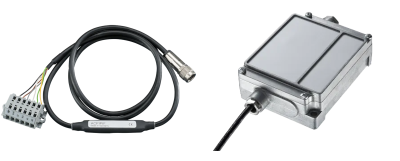
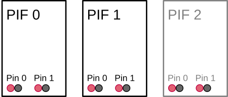

|
Thermal Camera SDK 11.4.10
SDK for Optris Thermal Cameras
|
|
Thermal Camera SDK 11.4.10
SDK for Optris Thermal Cameras
|
Process interfaces (PIFs) extend the functionality of your camera by providing a set of pins that each comprise a channel which can be assigned various functionalities. The following channel types are potentially available depending on the used PIF device type:
Ai - analog inputsDi - digital inputsAo - analog outputsDo - digital outputsFs - fail safe
The following table offers an quick overview of the available channels and analog output modes for each supported PIF:
| Device Type | Analog Inputs Ai | Digital Inputs Di | Analog Outputs Ao | Digital Outputs Do | Fail Safe Fs | Analog Output Modes |
|---|---|---|---|---|---|---|
| Standard | 1 | 1 | 1 | - | no | 1 - 10 V |
| Industrial (mA) | 2 | 1 | 3 | - | yes | 0/4 - 20 mA |
| Industrial (mV) | 2 | 1 | 3 | - | yes | 1 - 10 V |
| Internal | 1 | - | 1 | - | no | 0/4 - 20 mA |
| Stackable | 3 | - | 3 | 3 | yes | 1 - 10 V, 0/4 - 20 mA |
For more details about the different PIF variants please refer to the Supported Process Interfaces (PIFs) section of the Features chapter. It also contains links to their respective product pages that feature more detailed spec sheets and manuals in their download section.
The process interface and its channels can either be configured via
ProcessInterface accessible via IRImager::getPif() at runtimeThe function of a channel is determined by its mode. Depending on the channel type different modes are available. For a detailed description of these modes please refer to the Modes section.
The documentation of the configuration file explains in detail how you can setup your PIF device in this way. At runtime you can get and set the configuration for an entire process interface or just for its individual channels through the ProcessInterface class. By providing coherent configurations instead of single options at a time the SDK can better ensure their overall validity and consistency. The ProcessInterface can be access at runtime via the IRImager::getPif() method. This is, however, only possible when the IRImager has an active camera connection. If no connection is established, calls of the getPif() methods will result in a SDKException.
IRImager::getPif() methods return a reference to the implementation object of the ProcessInterface. This reference is only valid during an active camera connection. Therefore, take great care when you are retaining a copy of this reference!This section explains in more detail the different properties of the process interface devices so that you can easily configure it as you desire.
The configuration requires you to specify the type of PIF you wish to use. The SDK will then check your choice against the PIF type reported by the firmware of the camera. Depending on the camera type this will either be
Depending on the situation the SDK will try set the desired device. This can yield the following outcomes:
SDKException, if the desired PIF type is not compatible with the camera.SDKException, if the set type is Proprietary or TemperatureProbe and an actual PIF is connected.None type and will ignore all channel configurations.Automatic. The SDK will then automatically use the type reported by the firmware. In this case it will also try to apply all specified channel configurations. This can, however, fail because of unsupported analog output modes.Automatic mode may no report the type of the PIF that is actually connected to the camera.The ProcessInterface provides the getSupportedDeviceTypes() method that allows clients to query the subset of PIF device types that the current connected camera supports.
When using stackable PIFs you need to set the number of PIF devices you wish to use. In all other cases the SDK can derive this count from the set PIF device type.
The number of stackable PIFs has to be defined either in the configuration file or via the deviceCount member variable in the PifConfig class when using the setConfig() method of the ProcessInterface.
This behavior allows clients to configure PIFs without the need to connect them to the camera. At the moment, however, this is pointless because the SDK does not support autonomous settings that would retain the set configuration on-device. Currently, the configuration is lost when the camera loses power.
This section explains in more detail the different properties of the PIF so that you can easily configure them as you like.
The individual channels are addressed by a pair of indices: [deviceIndex, pinIndex].
The deviceIndex refers to the physical process interface on with the pins for the desired channel are located. It is only relevant for stackable PIFs. In all other cases the deviceIndex is 0.
The pinIndex identifies the actual pins on the specified PIF device that correspond with the desired channel.
PifIndex class to hold the device and pin indices in the PIF channel configuration classes.To better understand the addressing of the channels please consider the setup shown in the figure below: Three stackable PIFs are configured but only two are actually connected to the camera (the one not connected is grayed out).

In this case the deviceIndex can be in [0, 2] and the pinIndex can be in [0, 1]. Thus, manipulating the pins 0 and 1 on the PIF device 2 is possible but will not yield any tangible effects.
The properties of this addressing schema are also reflected in the getter methods for the device and channels counts provided by the ProcessInterface. Their differences are best understood with the above example in mind:
Devices
getActualDeviceCount() returns the number of actually connected devices. Example: 2.getConfigurableDeviceCount() returns the number configurable devices. Example: 3.Channels (XX denotes the channel type)
getActualXXCount() returns the count of all XX channels on actually connected devices. Example: 2 * 2 = 4.getConfigurableXXCount() returns the count of all XX channels on configurable devices. Example: 3 * 2 = 6.getXXCountPerDevice() returns the count of XX channels per individual device. Example: 2.The fail safe channel is an exception. If available, there will always be single one. Even in the case of multiple stackable PIFs that each have separate pins for this channel. In this case these pins will all output the same signal.
Each available channel on a PIF can be configured to have a specific functionality by assigning it a mode. This can either be done with the help of the configuration file or through the configuration setter methods exposed by the ProcessInterface. With them you can either set the configuration for the entire device at once or just for a single channel.
The most important configuration option that specifies the desired functionality is the mode. Depending on your chosen mode you may need to provide additional configuration parameters. Each channel type has its own configuration class that encapsulates all the potential parameters required by the different modes:
PifAiConfigPifDiConfigPifAoConfigPifDoConfigPifFsConfigYou can either refer to the API or the configuration file documentation for a comprehensive explanation of their effects. In order to make it easy to generate correct configurations all the configuration classes listed above feature a static create method for each supported mode. If you want to output a frame synchronization signal with a pulse height of 7.5 V on the analog output channel [0, 1], you will be able to generate the required configuration object in C++ as follows:
To apply this configuration you can either
setAoConfig(aoConfig) from the ProcessInterface to adjust a single channel configuration oradd it to an instance of the PifConfig class
and call setConfig(pifConfig) of the ProcessInterface to set the overall PIF configuration.
PifConfig object are set to the mode Off.You can also use the getter methods for the overall PIF configuration or for the individual channel configurations to get objects encapsulating their current state. You can then update them by adjusting the values of their member variables and passing them back to their respective setter methods.
The following modes are unique, meaning they can only be applied once per PIF:
AmbientTemperatureEmissivityFailSafeFlagControlFrameSyncInternalTemperatureFailSafe mode.The values read by the PIF on its input channel pins can be accessed at any time regardless of the configured mode through the meta field in the FrameEvent object provided by the onFrame() callback of the IRImagerClient.
Off.Use the method
getPifAiValue(deviceIndex, pinIndex) to get the currently read voltage on the corresponding analog input pins.
getPifDiValue(deviceIndex, pinIndex) to get a boolean indicating whether the voltage signal on the digital input pins is high (true) or low (false).The FrameMetadata object contains inputs values for all configurable PIF devices regardless of whether they are connect or not.
0 and 1 on PIF 2.The FrameMetadata also contains the count of configurable and actually connected PIFs that can be accessed via its getPifActualDeviceCount() and getPifConfigurableDeviceCount() methods. With their help you can easily identify the deviceIndex values that refer to valid input data:
0 <= deviceIndex < getPifActualDeviceCount()
Aside from letting the SDK or the camera firmware generate signals on the output channels you can also do this manually. To this end, you have to set the desired output channel to the mode ExternalCommunication. For the analog output channel [0, 1] this could be done in C++ as follows:
If successful you can now set an output voltage of 5.5 V on this channel by calling
from the ProcessInterface.
The same approach applies to digital outputs. Here a value of true generates a high signal and a value of false a low signal.
setAoValue() or setDoValue() without setting the respective channel mode to ExternalCommunication, the SDK will throw an exception. In this way the SDK prevents you from meddling with and potentially disrupting other output channel functionality.As mentioned before, the mode of a channel determines what functionality it provides. Regardless of the configured mode you will always be able to access the input values read by the PIF on its input channels.
The rest of this section lists and describes all the modes that are currently supported by the SDK roughly grouped by channel type.
Modes marked as unique can only be applied once across all channels.
You can consult the documentation of the channel settings of the configuration file for more exhaustive details about the available parameters for each mode.
| Supported by | Parameters | Unique |
|---|---|---|
| all | - | no |
The channel is switched off and does not offer any special functionality.
| Supported by | Parameters | Unique |
|---|---|---|
| analog inputs | gain, offset | yes |
Converts the voltage level U_in on an analog input into an ambient temperature t_ambient as follows
t_ambient = (U_in - offset) / gain
and applies it to the overall thermal frame as part of the radiation parameters. In order to minimize computational effort the radiation parameters are only updated at most every 500 ms.
| Supported by | Parameters | Unique |
|---|---|---|
| analog inputs | gain, offset | yes |
Converts the voltage level U_in on an analog input into an emissivity e in the range of [0.01, 1.1] as follows
e = (U_in - offset) / gain
and applies it to the overall thermal frame as part of the radiation parameters. In order to minimize computational effort the radiation parameters are only updated at most every 500 ms.
| Supported by | Parameters | Unique |
|---|---|---|
| analog and digital inputs | threshold, low active | yes |
The shutter flag is controlled by the signal read on the input channel. Depending on the channel type this has the following effects:
analog input
The input voltage U_in will trigger the following actions:
| Action | low_active | !low_active |
|---|---|---|
| close the shutter flag | U_in < U_threshold | U_in >= U_threshold |
| open the shutter flag | U_in >= U_threshold | U_in < U_threshold |
digital input
The input signal S_in will trigger the following actions:
| Action | low_active | !low_active |
|---|---|---|
| close the shutter flag | S_in == low | S_in == high |
| open the shutter flag | S_in == high | S_in == low |
| Supported by | Parameters | Unique |
|---|---|---|
| analog inputs | gain, offset, name, unit | no |
The input voltage U_in read on the configured channel is converted to a target value X_out as follows
X_out = (U_in - offset) / gain
and is then provided to IRImagerClients via the onPifUncommittedValue() callback alongside with its name and unit.
| Supported by | Parameters | Unique |
|---|---|---|
| analog and digital outputs | output mode, active, inactive, low active | no |
This mode allows you to output whether one or more alarm channels are in their Active state. An alarm channel is Active, if the value it is monitoring falls outside the set alarm range. Multiple alarm channels can route their state to a single PIF channel. The PIF channel will consider the combined alarm as Active if at least one of these alarm channels is Active (logic or-connection). If none of the alarm channels is Active or no alarm channels are associated with the PIF channel it will consider the combined alarm as inactive.
The PIF channel will retain this mode no matter if it has associated alarm channels or not.
analog outputs
| Condition | Level Set by Parameter |
|---|---|
At least one associated alarm channel is Active | active |
None of the associated alarm channels is ActiveNo alarm channel associated | inactive |
digital outputs
| Condition | Output with low active | Output with not low active |
|---|---|---|
At least one associated alarm channel is Active | low | high |
None of the associated alarm channels is Active No alarm channel associated | high | low |
| Supported by | Parameters | Unique |
|---|---|---|
| analog and digital outputs | output mode | no |
In this mode the output of the configured channel can be controlled by the clients of the SDK. To this end, they can use the following methods of the ProcessInterface:
setAoValue(deviceIndex, pinIndex, value)setDoValue(deviceIndex, pinIndex, value)For more details refer to the Output Value section of this chapter.
| Supported by | Parameters | Unique |
|---|---|---|
| analog and digital outputs | output mode, active | yes |
A heart beat signal is output on the given channel that indicated whether the camera and the processing chain of the SDK is working correctly. See the Fails Safe chapter for details about the generated signal and about the conditions that dictate when the fail safe is active.
The value of the active parameter defines the height of the provided heart beat signal.
| Supported by | Parameters | Unique |
|---|---|---|
| analog and digital outputs | output mode, active, intermediate, inactive, low active | yes |
The signal output on the configured channel indicates the current status of the shutter flag. Depending on the channel type the following output values are generated:
analog outputs
| Flag Status | Level Set by Parameter |
|---|---|
| Open | inactive |
| Moving | intermediate |
| Closed | active |
digital outputs
| Flag Status | Output with low active | Output with not low active |
|---|---|---|
| Open | high | low |
| Closed | low | high |
| Supported by | Parameters | Unique |
|---|---|---|
| analog and digital outputs | output mode, active | yes |
Every time a new frame is captured a short pulse is output on the designated channel. Depending on the channel type this pulse takes the following form:
analog outputs
The moment a frame is captured the output level will rise to the value specified by the active parameter and will will shortly afterwards revert back to the lower limit defined by the configured output mode.
digital output
When a frame is captured the output signal will be set for a brief time to high and will then revert back to low.
| Supported by | Parameters | Unique |
|---|---|---|
| analog outputs | output mode, gain, offset | yes |
The current internal temperature of the camera is measured by a built-in probe. Its value t_internal is converted into an output value X_out as follows
X_out = gain * t_internal + offset
which is then provided on the designated channel.
| Supported by | Parameters | Unique |
|---|---|---|
| analog outputs | output mode, field index, field stat, gain, offset | no |
A specific data point of a measurement field can be output on the designated channel. The field index parameter identifies the measurement field and the field stat defines the data point. The value x_field of this data point is converted to an output value X_out
X_out = gain * x_field + offset
and is then provided on the channel.
You can create a measurement field in one of the following two ways:
addMeasurementField() method of the IRImager to add a field at runtime. On success it returns a MeasurementField handle that can be used to generate the channel configuration. Additionally, you can access the field index via the MeasurementField::getIndex() method.| Supported by | Parameters | Unique |
|---|---|---|
| fail safe | - | no |
Some PIF devices feature a dedicated fail safe channel that can be activated regardless of whether another channel mode was set to FailSafe. It provides the same information but in a different way.
For more details please refer to the PIF Signals section of the Fail Safe chapter.